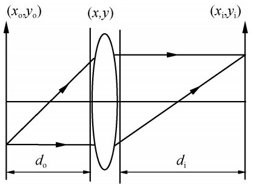
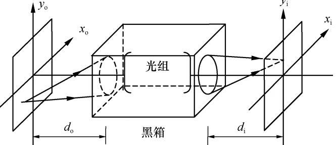

任何平面物场分布都可以看作为无数小面元的组合，而每个小面元都可看作一个加权的\(\delta\)函数.
数学建模过程中，“物”与“光源”是类似的.
用\(delta\)函数表征的是点光源.
对于一个透镜或一个成像系统，若能够清楚知道物平面上任一小面元的光振动通过成像系统后，在像平面上所造成的光振动分布情况，通过线性叠加，原则上便能求得任何物面光场分布通过系统后所形成的像面光场分布，进而求得像面强度分布.
这就是相干照明下的成像过程，关键是求出任意小面元的光振动所对应的像场分布.
当该面元的光振动为单位脉冲，即\(\delta\)函数时，这个像场分布函数称为点扩散函数或脉冲响应，常用\(h(x_o, y_o; x_i, y_i)\)表示，表示物平面上\((x_o, y_o)\)点的单位脉冲通过成像系统后在像平面\((x_i, y_i)\)点产生的光场分布.
一般来说，\(h(x_o, y_o; x_i, y_i)\)既是\(x_o, y_o\)的函数，也是\(x_i, y_i\)的函数.
研究在相干照明下，一个消像差的正薄透镜对透明物成实像的情况.

如图所示：物体放在透镜前距离为\(d_o\)的输入平面\(x_oy_o\)上，在透镜后距离\(d_i\)的共轭面\(x_iy_i\)上观察成像情况.
[设]紧靠物体后的复振幅分布为：\(U_o(x_o', y_o')\).
[设]\((x_o', y_o')\)点处发出的单位脉冲为\(\delta(x_o-x_o', y_o-y_o')\).
沿光波传播方向，逐面计算三个特定平面上的场分布：
这样就可最终导出一个点源的输入输出关系.
利用Fresnel衍射公式，有：
$$\begin{align} \mathrm{d}U_1(x_o',y_o';x,y) &= \frac{\exp(ikd_o)}{i\lambda d_o}\iint_{-\infty}^{+\infty}\delta(x_o-x_o', y_o-y_o')\exp\left[ik\frac{(x-x_o)^2 + (y-y_o)^2}{2d_o}\right]\mathrm{d}x_o\mathrm{d}y_o\\ &= \frac{\exp(ikd_o)}{i\lambda d_o}\exp\left[ik\frac{(x-x_o')^2 + (y-y_o')^2}{2d_o}\right] \end{align}$$由于\((x_o', y_o')\)是任意的，为书写方便，略去常数相位因子后，上式可写为：
$$\mathrm{d}U_1(x_o, y_o; x, y) = \frac{1}{i\lambda d_o}\exp\left[ik\frac{(x-x_o)^2 + (y-y_o)^2}{2d_o}\right]$$\(x_oy_o\)平面与\(x_o'y_o'\)平面在物理上其实是同一个平面，但是为了在数学上区分开，采取两个不同的符号.
这里求的是点扩散函数，即系统对单位脉冲的响应，因此不加\(U_0\).
此波通过孔径函数\(P(x,y)\)，焦距为\(f\)的透镜后，复振幅\(\mathrm{d}U_1'(x_o, y_o;x, y)\)为：
$$\mathrm{d}U_1'(x_o, y_o;x,y) = P(x,y)\exp\left(-ik\frac{x^2 + y^2}{2f}\right)\mathrm{d}U_1(x_o, y_o; x, y)$$由于透镜后表面到观察面，光场的传播满足Fresnel衍射，于是物平面上的单位脉冲在观察面上引起的复振幅分布（即点扩散函数）可写为：
省略常数相位因子\(-\exp(ikd_i)\)，由于物像平面的共轭关系满足Gauss公式：
$$\frac{1}{d_o} + \frac{1}{d_i} = \frac{1}{f}$$ $$\begin{align}\therefore h(x_o, y_o; x_i, y_i) =& \frac{1}{\lambda^2 d_od_i}\exp\left[ik\frac{x_o^2 + y_o^2}{2d_o}\right]\exp\left[ik\frac{x_i^2 + y_i^2}{2d_i}\right]\\ & \times\iint_{-\infty}^{+\infty}P(x,y)\exp\left[-ik\frac{x_ox + y_oy}{d_o}\right]\exp\left[-ik\frac{x_ix + 2y_iy}{2d_i}\right]\mathrm{d}x\mathrm{d}y\\ =& \frac{1}{\lambda^2d_od_i}\exp\left[ik\frac{x_o^2 + y_o^2}{2d_o}\right]\exp\left[ik\frac{x_i^2 + y_i^2}{2d_i}\right]\\ & \times\iint_{-\infty}^{+\infty}P(x,y)\exp\left\{-ik\left[\left(\frac{x_i}{d_i} + \frac{x_o}{d_o}\right)x + \left(\frac{y_i}{d_i} + \frac{y_o}{d_o}\right)y\right]\right\}\mathrm{d}x\mathrm{d}y \end{align}$$积分前的相位因子\(\exp\left[ik\frac{x_i^2 + y_i^2}{2d_i}\right]\)不影响最终探测的强度分布，可以略去.
\(\exp\left[ik\frac{x_o^2 + y_o^2}{2d_o}\right]\)在求物面上各点对像面光场的贡献时，需要参与积分，不可略去.
当透镜的孔径较大时，物面上每一物点产生的脉冲响应为一很小的像斑，那么对应于像面上\((x_i, y_i)\)点光场产生有意义贡献的，必定为物面上与几何成像对应的、以物点为中心的微小区域.
在此区域内，近似认为\(x_o,~y_o\)不变，其值与\(x_i,~y_i\)点的共轭物坐标\(x_o = x_i/M,~y_o = y_i/M\)相同，即作以下近似：
$$\exp\left[{i\frac{k}{2d_o}(x_o^2 + y_o^2)}\right]\approx \exp\left[{i\frac{k}{2d_o}\left(\frac{x_i^2 + y_i^2}{M^2}\right)}\right]$$通过近似后的相位因子不再依赖于\((x_o, y_o)\)，因此不会影响\(x_iy_i\)面上的强度分布，于是可以略去，则：
[令]
$$\tilde{x}_o = Mx_o,\quad \tilde{y}_o = My_o$$ $$\begin{align}\therefore h(x_o, y_o; x_i, y_i) &= \frac{1}{\lambda^2d_od_i}\iint_{-\infty}^{+\infty}P(x,y)\exp\left\{-i\frac{2\pi}{\lambda d_i}\left[\left(x_i - \tilde{x}_o\right)x + \left(y_i - \tilde{y}_o\right)y\right]\right\}\mathrm{d}x\mathrm{d}y\\ &= h(x_i - \tilde{x}_o, y_i-\tilde{y}_o) \end{align}$$该式表明：在近轴成像条件下，上式所表征的透镜成像系统是空不变的.
不考虑几何像差，仅考虑系统的衍射限制.
若忽略衍射效应，点物通过系统后将形成一个理想的点像.
一般的衍射受限系统可由若干共轴球面透镜组成，这些透镜既可以是正透镜，也可以是负透镜，且透镜也不一定是薄的.
这里的“系统”主要指系统中的孔径光阑（带来的性质）.

如图所示，任意成像系统都可以分成三部分：
光波在一、三两部分空间的传播可按Fresnel衍射处理.
对于第二部分的透镜系统，在等晕条件下，可将其作为一个黑箱处理，黑箱两个边端分别是入瞳与出瞳.
只要能确定这个黑箱两个边端的性质，整个透镜组的性质便可确定下来，而不必深究其内部结构.
假定在入瞳与出瞳之间的光的传播可用几何光学来描述，所谓边端性质是指成像光波在入瞳与出瞳平面上的性质.
$$h(x_o, y_o; x_i, y_i) = K\iint_{-\infty}^{+\infty}P(x,y)\exp\left\{-i\frac{2\pi}{\lambda d_i}[(x_i-Mx_o)x + (y_i-My_o)y]\right\}\mathrm{d}x\mathrm{d}y$$\(K\)的数值取决于具体的光学系统
上式表明：当可以忽略光曈的衍射时，\(x_o, y_o\)点的脉冲通过衍射受限系统后在像面上得到的仍为点脉冲，其位置为\(x_i = \tilde{x}_o = Mx_o,~ y_i = \tilde{y}_o = My_o\).
这里研究的是空域
[令]\(\tilde{x}_o = Mx_o,\quad \tilde{y}_o = My_o\).
将积分式中的\(\alpha,~\beta\)分别代换为\(x_o,~y_o\)，有：
$$\begin{align} U_i(x_i, y_i) &= \iint_{-\infty}^{+\infty}U_o(\alpha, \beta)h(x_i-M\alpha, y_i-M\beta)\mathrm{d}\alpha\mathrm{d}\beta\\ &= \iint_{-\infty}^{+\infty}U_o(x_o, y_o)h(x_i-Mx_o, y_i-My_o)\mathrm{d}x_o\mathrm{d}y_o\\ &= \frac{1}{M^2}\iint_{-\infty}^{+\infty}U_o\left(\frac{\tilde{x}_o}{M}, \frac{\tilde{y}_o}{M}\right)h(x_i-\tilde{x}_o, y_i-\tilde{y}_o)\mathrm{d}\tilde{x}_o\mathrm{d}\tilde{y}_o \end{align}$$考虑几何光学理想成像情况：
$$h(x_i - \tilde{x}_o, y_i - \tilde{y}_o) = K\lambda^2d_i^2\delta(x_i - \tilde{x}_o, y_i - \tilde{y}_o)$$ $$\begin{align} U_g(x_i, y_i) &= \frac{1}{M^2}\iint_{-\infty}^{+\infty}U_o\left(\frac{\tilde{x}_o}{M}, \frac{\tilde{y}_o}{M}\right)h(x_i-\tilde{x}_o, y_i-\tilde{y}_o)\mathrm{d}\tilde{x}_o\mathrm{d}\tilde{y}_o\\ &= \frac{1}{M^2}\iint_{-\infty}^{+\infty}U_o\left(\frac{\tilde{x}_o}{M}, \frac{\tilde{y}_o}{M}\right)K\lambda^2d_i^2\delta(x_i - \tilde{x}_o, y_i - \tilde{y}_o)\mathrm{d}\tilde{x}_o\mathrm{d}\tilde{y}_o\\ &= \frac{K\lambda^2d_i^2}{M^2}\iint_{-\infty}^{+\infty}U_o\left(\frac{\tilde{x}_o}{M}, \frac{\tilde{y}_o}{M}\right)\delta(x_i - \tilde{x}_o, y_i - \tilde{y}_o)\mathrm{d}\tilde{x}_o\mathrm{d}\tilde{y}_o\\ &= \frac{K\lambda^2d_i^2}{M^2}U_o\left(\frac{x_i}{M}, \frac{y_i}{M}\right) \end{align}$$称\(U_o\left(\frac{\tilde{x}_o}{M}, \frac{\tilde{y}_o}{M}\right)\)为\(U_o(x_o, y_o)\)的理想像.
[令]
$$\tilde{h}(x_i - \tilde{x}_o, y_i - \tilde{y}_o) = \frac{1}{K\lambda^2d_i^2}h(x_i - \tilde{x}_o, y_i - \tilde{y}_o)$$ $$\begin{align}\therefore U_i(x_i, y_i) &= \frac{1}{M^2}\iint_{-\infty}^{+\infty}U_o\left(\frac{\tilde{x}_o}{M}, \frac{\tilde{y}_o}{M}\right)h(x_i-\tilde{x}_o, y_i-\tilde{y}_o)\mathrm{d}\tilde{x}_o\mathrm{d}\tilde{y}_o\\ &= \frac{K\lambda^2d_i^2}{M^2}\iint_{-\infty}^{+\infty}U_o\left(\frac{\tilde{x}_o}{M}, \frac{\tilde{y}_o}{M}\right)\tilde{h}(x_i-\tilde{x}_o, y_i-\tilde{y}_o)\mathrm{d}\tilde{x}_o\mathrm{d}\tilde{y}_o\\ &= \iint_{-\infty}^{+\infty}U_o\left(\tilde{x}_o, \tilde{y}_o\right)\tilde{h}(x_i-\tilde{x}_o, y_i-\tilde{y}_o)\mathrm{d}\tilde{x}_o\mathrm{d}\tilde{y}_o\\ &= U_g(x_i, y_i)*\tilde{h}(x_i, y_i) \end{align}$$上式的物理意义为：物\(U_o(x_o, y_o)\)通过衍射受限系统后的像\(U_i(x_i, y_i)\)为\(U_o(x_o, y_o)\)的理想像\(U_g(x_i, y_i)\)和点扩散函数\(\tilde{h}(x_i, y_i)\)的卷积.
这表明：不仅对于薄的单透镜系统，而且对于更普遍的情形，衍射受限成像系统仍可看作线性空不变系统.
由\(U_i(x_i, y_i)\)可得像的强度分布为：
$$I_i(x_i, y_i) = \left\lvert U_i(x_i, y_i)\right\rvert^2$$此节是从频域来分析的.
在相干照明下的衍射受限系统，对复振幅的传递是线性空不变的.
定义系统的输入频谱\(G_{ge}(\xi, \eta)\)与输出频谱\(G_{ie}(\xi, \eta)\)分别为：
$$G_{ge}(\xi, \eta) = \mathcal{F}\{U_g(\tilde{x}_o, \tilde{y}_o)\}$$ $$G_{ie}(\xi, \eta) = \mathcal{F}\{U_i(x_i, y_i)\}$$相干传递函数（CTF）为：
$$H(\xi, \eta) = \mathcal{F}\{\tilde{h}(x_i, y_i)\}$$\(G_{ge}\)是理想像的频谱，而非物的频谱\(G_{oe}\)
CTF也称为频谱函数
$$G_{ge}(\xi, \eta) = G_{oe}(M\xi, M\eta)$$ $$\tilde{x} \overset{\mathcal{F}}{\to}x_i\overset{\mathcal{F}}{\to}\xi$$上式指出：相干传递函数\(H(\xi, \eta)\)等于光曈函数，仅在空域坐标\(x,~y\)与频域坐标\(\xi,~\eta\)间存在一定的坐标缩放关系.
光曈函数总是取\(0\)和\(1\)两个值，所以相干传递也是如此.
衍射受限系统是一个低通滤波器，低于某一频率的指数基元成分将按原样通过，高于该频率的指数基元成分将被截止.
这个特征频率称为系统的截止频率，用\(\rho_c\)表示.
为什么P的自变量变了，还是光曈函数？
什么叫指数基元成分？
若不考虑孔径的有限大小，认为\(P\equiv 1\)，则整个频谱面上有\(H(\xi, \eta) = 1\).
此时像是物的准确复现，没有任何信息丢失，认为是几何光学理想成像情况.
若在一个反演坐标中定义\(P\)，则可以去掉负号的累赘，即：
$$H(\xi, \eta) = P(\lambda d_i\xi, \lambda d_i\eta)$$由于一般光曈函数都是对光轴呈中心对称的，这样的处理通常结果不会产生任何实质性的影响.
一个直径为\(D\)的圆形光曈，其孔径函数\(P(x,y)\)可表示为：
$$P(x,y) = \text{circ}\left(\frac{\sqrt{x^2 + y^2}}{D/2}\right)$$相干传递函数为：
$$\begin{align} H(\xi, \eta) &= P(\lambda d_i\xi, \lambda d_i\eta)\\ &= \text{circ}\left(\frac{\sqrt{(\lambda d_i\xi)^2 + (\lambda d_i\eta)^2}}{D/2}\right)\\ &= \text{circ}\left(\frac{\sqrt{\xi^2 + \eta^2}}{D/2\lambda d_i}\right) \end{align}$$由圆柱函数的定义可知：\(D/2\lambda d_i\)区域内，\(H(\xi, \eta) = 1\)；\(D/2\lambda d_i\)区域外，\(H(\xi, \eta) = 0\).
故截止频率为：
$$\rho_c = \frac{D}{2\lambda d_i}$$由于是圆形光曈，任何方向上的截止频率是相同的.
[注]此处的\(\rho_c\)为像面上的截止频率，物面上的截止频率为\(\rho_{oc} = |M|\rho_c\).
若出瞳是边长为\(a\)的正方向，则光曈函数为：
$$P(x,y) = \text{rect}\left(\frac{x}{a}\right)\text{rect}\left(\frac{y}{a}\right)$$相干传递函数为：
$$\begin{align} H(\xi, \eta) &= P(\lambda d_i\xi, \lambda d_i\eta)\\ &= \text{rect}\left(\frac{\lambda d_i\xi}{a}\right)\text{rect}\left(\frac{\lambda d_i\eta}{a}\right)\\ &= \text{rect}\left(\frac{\xi}{a/\lambda d_i}\right)\text{rect}\left(\frac{\eta}{a/\lambda d_i}\right) \end{align}$$